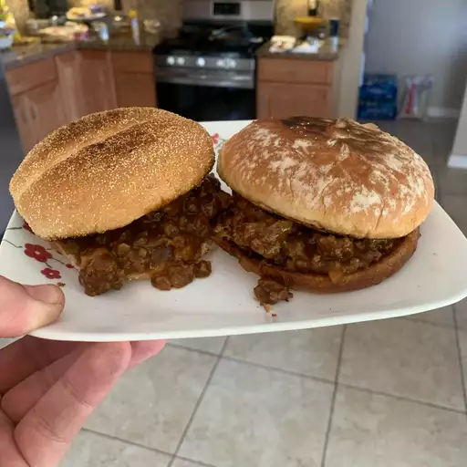

recipe steps
ingredients

- 1 pound smoked sausage, sliced
- 1 onion, chopped, divided
- 1 green bell pepper, chopped, divided
- 1 jalapeno pepper, finely diced, divided
- 2 cups water
- 2 cubes chicken bouillon
- salt to taste
directions
- Combine sausage, half the onion, half the green bell pepper, half the jalapeno pepper, water, chicken bouillon, garlic and herb seasoning, Cajun seasoning blend, red pepper flakes, and bay leaf in a large stockpot; Bring to boil and cook, stirring occasionally, until liquid is reduced by half, 15 to 20 minutes.
- Mix kidney beans, tomatoes, remaining onion, remaining green bell pepper, and remaining jalapeno pepper into the sausage mixture; season with salt. Bring to a boil, reduce heat, and simmer until kidney bean mixture is thickened, 15 to 20 minutes. Remove and discard bay leaf.
- Spoon 1/2 cup cooked rice into 6 serving bowls; top with kidney bean mixture.